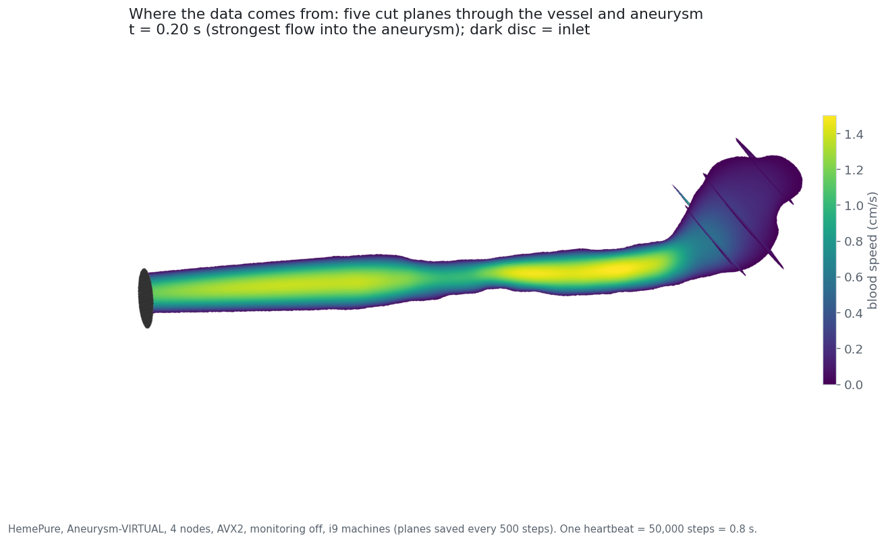
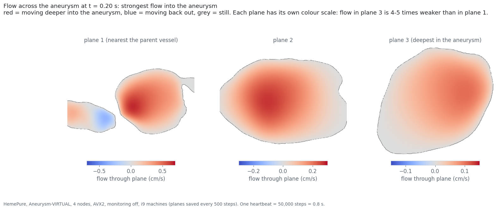
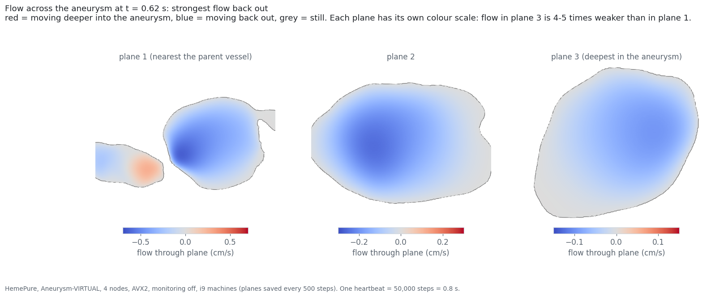
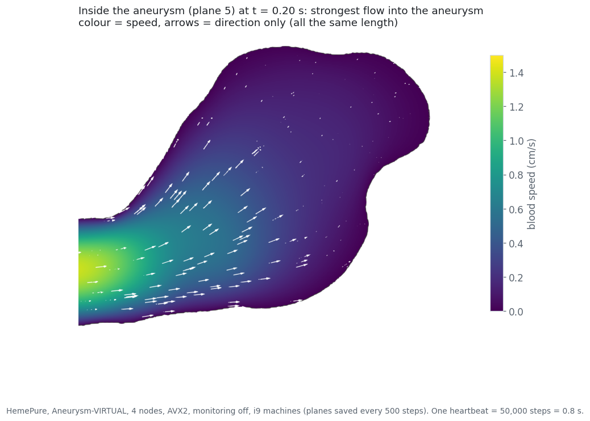
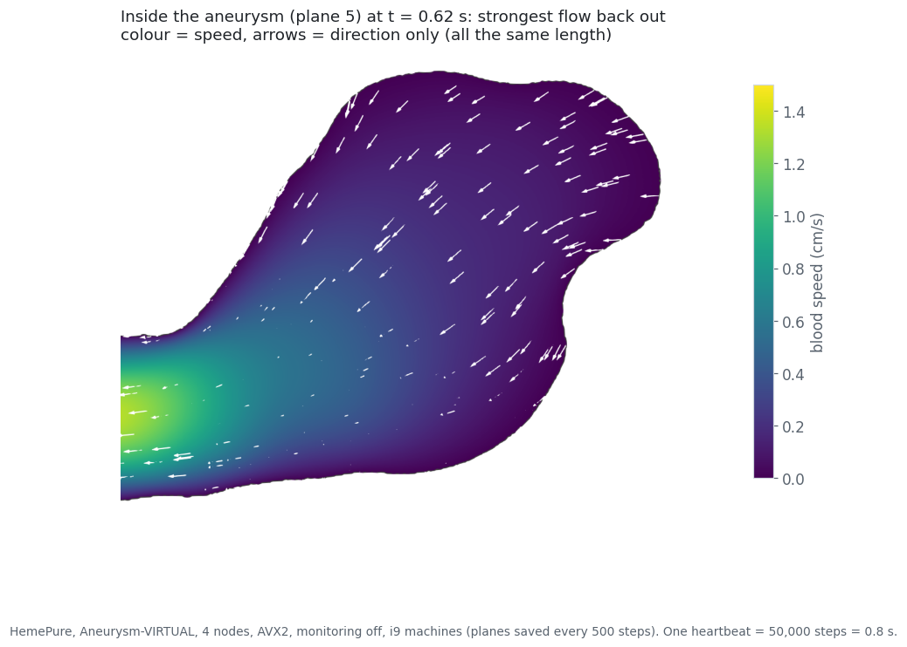

Each run writes a progress line to its log every 200 steps. The controller checks the active runs and the machines they run on for any other process started by another user every 60s. This is what is used to figure out the most likely cause for slowdowns and speedups.
Monitoring slows the computing part, but on 8 and 16 nodes most of each step is waiting for the network, so the total changes little and network noise can outweigh it.
No build “wins” consistently. Differences in the total come mainly from time spent waiting for the network, not from computing. For each line, the 4-node run is considered the baseline i.e. 8-node run with no intrinsics is 1.97 times faster than 4-node run with no intrinsics for example.
4, 8 or 12 worker processes per machine. For each line, the 4-node run is considered the baseline i.e. 8-node run with 12 workers is 1.14 times faster than 4-node run with 12 workers for example.
From the clean runs on the i7 machines (choose “clean re-runs only” to see just these).
Simulation time is the total from each run's report.txt (written by HemePure at the end of the run). Start-up (reading the .gmy file) isn't included. The lower plots in each case use “LB calc only” (computing) and “MPI Wait” (waiting for messages from other workers) from report.txt which HemePure records for every worker. Computing plot shows the slowest worker since every step waits for it. Waiting shows the worker that waited least time i.e. waiting time no worker could avoid.
Time = “Simulation total” from report.txt.





The vessel's shape is realistic but the flow is not. The case is built to stress test the computation.
.gmy file name), slow flow inside compared with the main vessel which is also seen in real aneurysms..dat (from the dependencies used, it seems to use the XDR binary format) which is converted to plain text using hemeXtract. A python script converts plain text to VTK files. ParaView 6.0.1 then draws these as images. Images are laid out using matplotlib and frames are combined using ffmpeg.MPI time / application time by rank. Rank 0 coordinates; workers show unequal waiting.